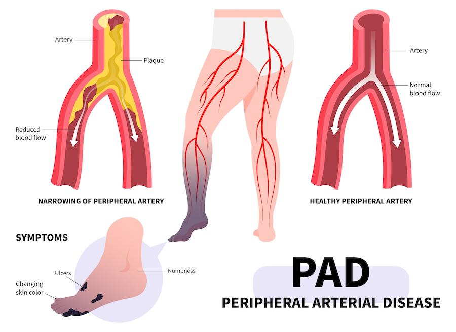
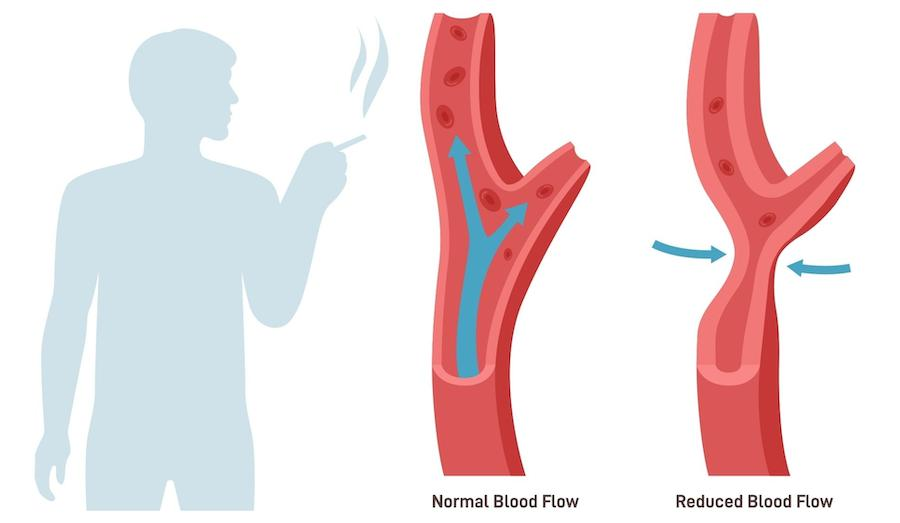
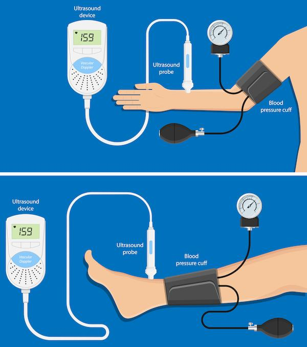

Peripheral artery disease, also called PAD, happens when arteries become narrow or blocked. Arteries are blood vessels that carry blood to your body. PAD makes it harder for blood to reach your legs and feet. This can cause pain, cramping, or wounds that heal slowly.
PAD and smoking are closely linked. Smoking tobacco products, like cigarettes, lowers oxygen in the blood and damages blood vessels. This makes it harder for blood to flow to your arms, legs, and other parts of your body, such as your brain or heart arteries.
Over time, reduced blood flow to your legs or arms can lead to serious problems. These can include pain, wounds that will not heal, and even loss of limbs.

Smoking is one of the biggest causes of PAD because it harms the inside of blood vessels, raises blood pressure, and lowers blood oxygen. This makes PAD worse and harder to treat.
Your risk for PAD rises if you also have:
High blood pressure
High blood sugar or diabetes
High cholesterol
Obesity
Poor circulation
Chronic inflammation
If you are a male
If you are over 40
Smoking contributes to some of these conditions or makes them worse.

Leg pain while walking that goes away with rest
Numbness or tingling in the feet or toes
Wounds on feet or legs that heal slowly
Cold feet or toes
Skin discoloration, including blue toes
Dry, shiny, or hairless skin
Weak pulse in legs or feet
Shortness of breath
Cough or wheezing
Chest pain
Lower stamina or energy
If PAD and smoking are not managed, you may face:
Skin infections that can spread quickly
Tissue damage that leads to wounds or sores
Pain when walking or even at rest
Amputation, or loss of a foot or leg
Stroke or heart attack
Emergency hospital care
Check your feet daily: Look for cuts, blisters, or color changes.
Keep feet clean and dry: Wash with mild soap and warm water. Dry well.
Use lotion: Lotion can prevent dry, cracked skin. Avoid putting lotion between your toes.
Wear socks and shoes: Protect your feet from injury.
Trim toenails with care: Ask for help if needed.
Avoid smoking: Every cigarette harms your arteries and lungs.
Monitor your levels: Track your blood pressure, blood sugar, and cholesterol.
Stay active: Walking helps improve blood flow.
Eat healthy: Choose fruits, vegetables, whole grains, and lean proteins.
Your care team may include:
Primary care team: Helps manage daily health and screenings
Cardiologist: Treats heart and blood vessel problems
Vascular surgeon: Helps with serious artery problems
Podiatrist: Checks feet and skin for signs of PAD
Smoking cessation support: Helps you quit tobacco with tools and support
Routine checkups: Your care team checks your blood flow, looks for new problems, and keeps your care plan up-to-date.
Bloodwork: These lab tests check cholesterol, sugar, and oxygen levels.
Circulation testing: This includes a simple test called the ankle-brachial index, or ABI. It compares the blood pressure in your ankle and arm to check for PAD.

Specialist referrals: Your care team may refer you to an expert in eye, foot, kidney, heart, or lung care.
Support programs: These can help you quit smoking or make lifestyle changes.
Treatments may include:
Blood pressure medicine
Cholesterol-lowering medicine
Blood thinners
Foot care treatments
Surgery or stents to open blocked arteries
Nicotine replacement and quitting aids for smoking
Follow your care plan: Take all medicine as prescribed.
Track your health: Keep your blood pressure and blood sugar in a healthy range.
Check your body: Look daily for wounds, color changes, or swelling.
Make healthy choices: Eat well, stay active, and avoid smoking.
Report changes early: Call your care team if you notice pain, wounds, or swelling.
Managing PAD and quitting smoking takes time, practice, and support. You may need:
Regular checkups with your care team
Tests or scans to check blood flow or heart health
Changes in medicine over time
Extra support to quit smoking and stay active
Having more than one health condition can feel hard. You are not alone. Your care team is here to help you one step at a time.
What numbers should I track and how often?
What foods and activities are best for me?
How often do I need checkups or tests?
When should I see a specialist?
What signs should I watch for at home?
Thank you for trusting us with your care. We are here to support you and want you to feel your best. Contact us with any questions.
IF YOU HAVE A MEDICAL EMERGENCY, CALL 911 OR GO TO THE EMERGENCY ROOM.
The information presented is intended for general information and educational purposes. It is not intended to replace the advice of your health care provider. Contact your health care provider if you believe you have a health problem.
Last updated May 2025
© 2025 Mytonomy, Inc. All rights reserved.